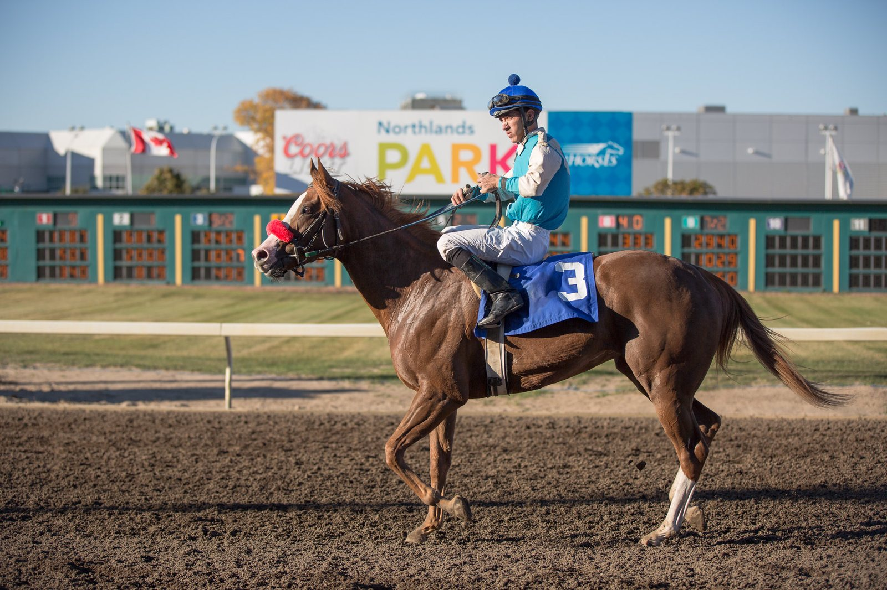

DRONGO y MARIANA D'ID estrenan su palmarés y dan un doblete a Ramón Avial en Toulouse
Ramón Avial ganó dos carreras para dosañeros en Toulouse el 30 de septiembre: DRONGO se impuso en el Prix du Château Narbonnais y MARIANA D'ID en el Prix du Minotaure, ambas sobre 2.000 metros.

DRONGO abrió la cuenta ante otros ocho potros. Ioritz Mendizabal lo llevó quinto en el primer tramo y lo sacó por el exterior a la salida de la última curva. En la recta, el potro aceleró y cruzó la meta con tres cuartos de cuerpo de ventaja sobre AFFIRMATIF, montado por Hugo Mouesan. ALPSEE, con Marvin Grandin, entró tercero.
El hijo de City Light y Damila, criado por el Haras de Beauvoir y propiedad de la Cuadra Rober, había sido cuarto en su debut en Burdeos.
La segunda victoria costó más. En el Prix du Minotaure, reservado a potrancas y con diez participantes, MARIANA D'ID corrió pegada a la cabeza, a la estela de la puntera ZARACOVA, y tomó el mando ya en la recta final. Con Maxime Foulon en la silla, tuvo que emplearse a fondo para contener el ataque de KATANA y ganó por un cuarto de cuerpo. ADHABI, con Fabrice Veron, fue tercera.
La hija de Marianafoot y Suama, que corre para Christophe Pierrou, venía de ser sexta en su estreno sobre 1.600 metros en la misma pista de Toulouse. Con 400 metros más de recorrido, pasó de la sexta plaza a la victoria.
La jornada se resume en dos datos: los dos dosañeros de Avial ganaban por primera vez, y ambos lo hicieron en su segunda salida a pista.
Avial tiene su cuadra en el centro de entrenamiento del Hipódromo de San Sebastián.
Fichas: H. Mouesan (jinete) · M. Foulon (jinete)
Por Martín Larrañeta